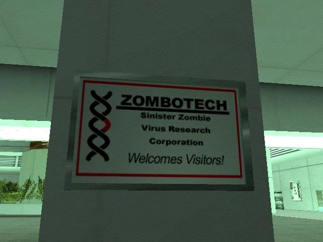

Một loạt các trận động đất thảm khốc đã phá hủy các thành phố và vùng nông thôn của San Andreas. Lục địa San Andreas đã tách khỏi đất liền, Sợ hãi và sự ích kỹ đã đẩy xã hội vào hỗn loạn. Ở trung tâm của San Fierro, một trong những thành phố lớn nhất của San Andreas, Tập đoàn Zombotech do chính phủ tài trợ đang nghiên cứu vũ khí sinh học trong cơ sở dưới lòng đất. Các phòng thí nghiệm đã bị tàn phá nặng nề bởi trận đại hồng thủy và một virus truyền nhiễm chết người đã rò rĩ ra ngoài trên khắp các đường phố. Trong khi các tổ chức đang dốc hết sức mình để giảm thiểu thiệt hại và cố gắng khắc phục hậu quả thì không ai để ý đến một thứ gì đó đang ngấm ngầm âm mưu quản lý tất cả.
Zombie
Chúng lần đầu tiên xuất hiện ở các thành phố đông đúc ở San Andreas: được mô tả là những con người điên cuồng cố gắng xé toạc mọi sinh vật sống. Lúc đầu, không ai nghĩ họ là thây ma, vì chính phủ đã bưng bít hết mọi thông tin. Một biển báo của tập đoàn Zombotech.
The Establishment đã sơ tán những người sống sót sau vụ dịch ở thành phố Las Venturas đã được xây dựng rào chắn, nhưng không may đại dịch đã vượt qua được hàng rào mà họ gọi là bất khả xâm phạm đó. Họ đã cho nổ bom nguyên tử bắt đầu thi hành thiết quân luật cho toàn thành phố và đặt thành phố vào tình trạng báo động cao nhất. Không ai được vào cũng như ra. Họ đặt tên cho thảm họa này là 'Doom Day' để giảm thiểu tai tiếng của nó, truyền thông sớm bị bịt miệng và dần dần mọi người ở đây bị chiềm vào quên lãng.
6 năm trôi qua và mọi thứ không trở nên tốt hơn. Những người sống sót nhặt những thứ từ nơi chính phủ rời bỏ và họ bắt đầu thành lập một tổ chức mới nhằm tìm kiếm cơ hội sống tốt hơn. Đây là một thế giới mới đầy khó khăn, với đầy đủ loại người: những người may mắn sống sót, những băng nhóm cướp tàn ác, những kẻ ăn thịt người máu lạnh, các lực lượng quân sự cậy quyền thế áp bức những người khác. Ranh giới giữa tốt và xấu chưa bao giờ mỏng manh đến thế
San Andreas được cai trị dưới bàn tay tàn nhẫn của Thống đốc Skinner, người nhậm chức chỉ sáu ngày sau thảm họa. Lực lượng vũ trang của ông chiến đấu để kiểm soát lãnh thổ, đưa những người khỏe mạnh vào cái được gọi là 'Trại tị nạn'. Các lực lượng quân sự và bán quân sự thường xuyên tham gia vào các cuộc đụng độ với các nhóm thường dân có vũ trang và Raiders. Nhu yếu phẩm đang ngày càng khan hiếm và nhiều người đã phải gạt đi 'phần người' của mình khi phải đối mặt với nạn đói diệt chủng. Các gia tộc và phe phái dùng bạo lực để tranh giành và thành lập các khu chiếm đóng chỉ với mục đích biểu trưng quyền lực và cuối cùng vẫn là muốn được sống sót. Quân đội chiến đấu nhằm tranh giành quyền lực tối cao, một vài người chiến đấu để duy trì nền văn minh và những người khác chỉ đấu tranh để sống sót vào ngày mà thế giới giờ đây chỉ toàn sự chết chóc. Khi rõ ràng là chính phủ không có kế hoạch giải cứu những người sống sót, sự tuyệt vọng bắt đầu xuất hiện ở một vài người khiến họ gần như sụp đổ. Tất cả các nỗ lực để chạy trốn San Andreas đều gặp phải các cuộc không kích. Nhưng đó là con đường duy nhất để thoát khỏi nơi này...